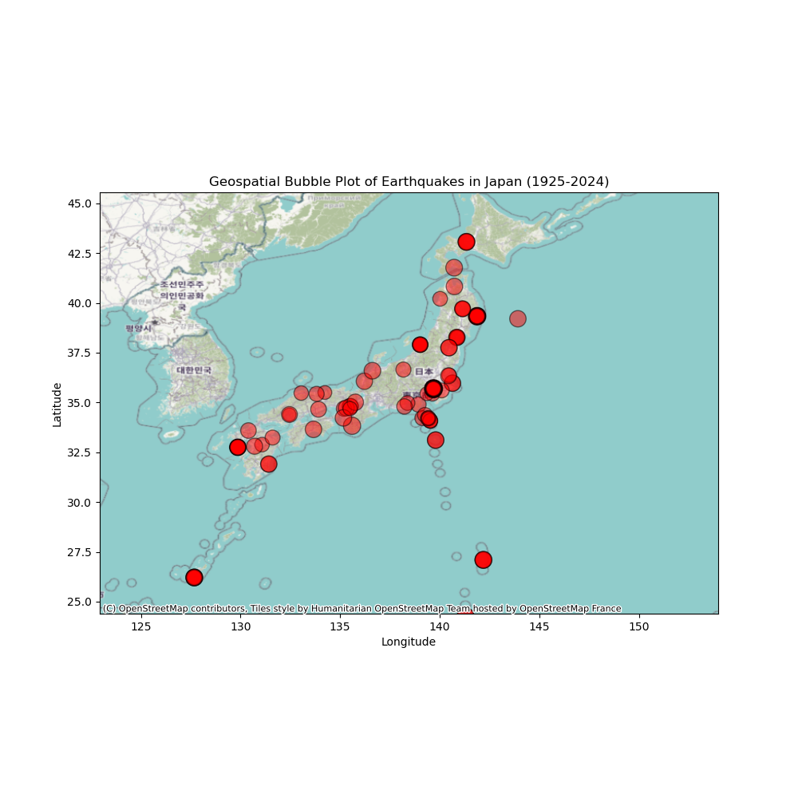

Time Series of Earthquake Magnitudes (1925-2024)
I developed this time series plot to show changes in earthquake magnitudes over time, analyzing trends and patterns in seismic activity. It points out periods of increased or decreased activity and discusses potential causes for these trends.

Geospatial Bubble Plot of Earthquake Magnitudes in Japan (1925-2024)
I developed this bubble plot to represent earthquake magnitudes geographically, highlighting the correlation between location and earthquake magnitude. Areas with frequent high-magnitude earthquakes are identified, offering insights into regions that are particularly vulnerable to seismic activity.
Time Series of Tsunami Magnitudes (1927-2024)
Similar to the earthquake time series, this plot focuses on tsunamis. It tracks the changes in tsunami severity over time, comparing trends with earthquake data.

Geospatial Bubble Plot of Tsunami Magnitudes in Japan (1927-2024)
Similar to the earthquake bubble plot, this visualization focuses on tsunami magnitudes. It emphasizes the importance of understanding tsunami severity in different regions, allowing for a comparison of the distribution with earthquake magnitudes.
Total Earthquake Impacts (1925-2024)
This radar chart visualizes the overall impact of earthquakes, including injuries, deaths, missing, house damage, house destroy, and damage. It provides a comprehensive view of the human and economic toll of earthquakes, highlighting significant impact metrics and trends over time.
Total Tsunami Impacts (1925-2024)
I created this radar chart to focus on the impacts of tsunamis, allowing for a comparison with earthquake impacts. It highlights the unique impacts of tsunamis, offering insights into their specific toll on human life and economic costs.

Comparison of Total Damage by Earthquakes and Tsunamis
The side-by-side bar chart compares the total damage caused by earthquakes and tsunamis. This visualization illustrates the economic cost of these disasters, identifying which type has been more costly over time and discussing potential reasons for these differences.

Maximum Water Height of Tsunamis (1927-2024)
I created this bar chart to illustrate the maximum water height of tsunamis over the specified period. Understanding the severity of tsunamis is crucial for disaster preparedness. Notable years with exceptionally high water heights are highlighted, offering insights into the most significant tsunami events and their potential impacts.

Geospatial Plot of Earthquake and Tsunami Occurrences (1925-2024)
This map shows the geographic distribution of earthquake and tsunami events. It emphasizes the importance of geographic analysis in disaster response and preparedness. The visualization identifies regions with high concentrations of events, providing valuable information for targeted preparedness efforts.